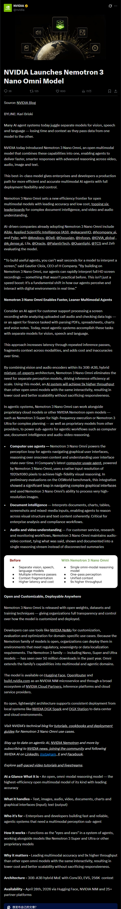

NVIDIA 推出 Nemotron 3 Nano Omni 模型
本文最后更新于 2026年4月29日 早上
NVIDIA 今日发布的 Nemotron 3 Nano Omni 是一款开放式多模态模型，它将多种功能整合到一个系统中， 使智能体能够利用视频、音频、图像和文本的高级推理能力，提供更快、更智能的响应。 这款一流的模型为企业和开发者提供了一条高效、精准的多模态 AI 智能体生产路径，并具备全面的部署灵活性和控制力。
Nemotron 3 Nano Omni 可实现更快、更精简的多模态代理
Consider an AI agent for customer support processing a screen recording while analyzing uploaded call audio and checking data logs — or an agent for finance tasked with parsing PDFs, spreadsheets, charts and voice notes. Today, most agentic systems accomplish these tasks with separate models for vision, speech and language.
设想一下，一个用于客户支持的人工智能代理需要处理屏幕录像，同时分析上传的通话音频并检查数据日志；或者一个用于财务的代理需要解析 PDF、电子表格、图表和语音笔记。如今，大多数代理系统都使用独立的视觉、语音和语言模型来完成这些任务。
This approach increases latency through repeated inference passes, fragments context across modalities, and adds cost and inaccuracies over time.
这种方法通过重复推理过程增加延迟，使跨模态的上下文变得碎片化，并且随着时间的推移增加成本和不准确性。
By combining vision and audio encoders within its 30B-A3B, hybrid mixture-of-experts architecture, Nemotron 3 Nano Omni eliminates the need for separate perception models, driving inference efficiency at scale. It pairs this efficiency with strong multimodal perception accuracy, enabling AI systems to achieve 9x higher throughput than other open omni models with the same interactivity. The result is lower costs and better scalability without sacrificing responsiveness or quality.
Nemotron 3 Nano Omni 采用 30B-A3B 混合专家架构，将视觉和音频编码器集成于其中，无需单独的感知模型，从而显著提升了大规模推理效率。它不仅效率高，而且拥有强大的多模态感知精度，使 AI 系统的吞吐量比其他具有相同交互性的开放式全向模型高出 9 倍 。最终实现了更低的成本和更好的可扩展性，同时又不牺牲响应速度或质量。
In agentic systems, Nemotron 3 Nano Omni can work alongside proprietary cloud models or other NVIDIA Nemotron open models — such as Nemotron 3 Super for high-frequency execution or Nemotron 3 Ultra for complex planning — as well as proprietary models from other providers, to power sub-agents for agentic workflows such as computer use, document intelligence and audio-video reasoning.
在代理系统中，Nemotron 3 Nano Omni 可以与专有云模型或其他 NVIDIA Nemotron 开放模型（例如用于高频执行的 Nemotron 3 Super 或用于复杂规划的 Nemotron 3 Ultra）以及其他提供商的专有模型协同工作，为代理工作流程（例如计算机使用、文档智能和音视频推理）的子代理提供支持。
Computer use agents — Nemotron 3 Nano Omni powers the perception loop for agents navigating graphical user interfaces, reasoning over onscreen content and understanding user interface state over time. H Company’s latest computer usage agent, powered by Nemotron 3 Nano Omni, uses a native input resolution of 1920×1080 pixels to achieve high-fidelity visual reasoning. In preliminary evaluations on the OSWorld benchmark, this integration showed a significant leap in navigating complex graphical interfaces and used Nemotron 3 Nano Omni’s ability to process very high-resolution images.
计算机使用代理——Nemotron 3 Nano Omni 为代理的感知回路提供动力，使其能够导航图形用户界面、推理屏幕内容并理解用户界面随时间的变化。H 公司最新推出的计算机使用代理由 Nemotron 3 Nano Omni 驱动，采用 1920×1080 像素的原生输入分辨率，实现了高保真度的视觉推理。在 OSWorld 基准测试的初步评估中，该集成方案在导航复杂图形界面方面展现出显著的提升，并充分利用了 Nemotron 3 Nano Omni 处理超高分辨率图像的能力。
Document intelligence — Interprets documents, charts, tables, screenshots and mixed-media inputs, enabling agents to reason across visual structure and text content coherently. Critical for enterprise analysis and compliance workflows.
文档智能 ——能够解读文档、图表、表格、屏幕截图和混合媒体输入，使代理能够连贯地分析视觉结构和文本内容。这对企业分析和合规工作流程至关重要。
Audio and video understanding — For customer service, research and monitoring workflows, Nemotron 3 Nano Omni maintains audio-video context, tying what was said, shown and documented into a single reasoning stream instead of disconnected summaries.
音频和视频理解 ——对于客户服务、研究和监控工作流程，Nemotron 3 Nano Omni 可保持音频视频上下文，将所说、所展示和所记录的内容整合到一个单一的推理流中，而不是分散的摘要。
Open and Customizable, Deployable Anywhere 开放且可定制，可部署在任何地方
Nemotron 3 Nano Omni is released with open weights, datasets and training techniques — giving organizations full transparency and control over how the model is customized and deployed.
Nemotron 3 Nano Omni 发布时采用了开放的权重、数据集和训练技术，使组织能够完全透明地控制模型的定制和部署方式。
Developers can use tools like NVIDIA NeMo for customization, evaluation and optimization for domain-specific use cases. Because the Nemotron family of models is open, organizations can deploy them in environments that meet regulatory, sovereignty or data localization requirements.
开发人员可以使用 NVIDIA NeMo 等工具 ，针对特定领域的用例进行定制、评估和优化。由于 Nemotron 系列模型是开源的，因此组织可以将其部署在符合监管、主权或数据本地化要求的环境中。
The Nemotron 3 family — including Nano, Super and Ultra models — has seen over 50 million downloads in the past year. Omni extends the family’s capabilities into multimodal and agentic domains.
Nemotron 3 系列产品（包括 Nano、Super 和 Ultra 型号） 在过去一年中下载量超过 5000 万次 。Omni 将该系列产品的功能扩展到了多模态和智能体领域。
The model is available on Hugging Face, OpenRouter and build.nvidia.com as an NVIDIA NIM microservice and through a broad ecosystem of NVIDIA Cloud Partners, inference platforms and cloud service providers.
该模型可通过 Hugging Face 、 OpenRouter 和 build.nvidia.com 作为 NVIDIA NIM 微服务使用，并通过 NVIDIA 云合作伙伴 、推理平台和云服务提供商的广泛生态系统使用 。
Its open, lightweight architecture supports consistent deployment from local systems like NVIDIA Jetson hardware, NVIDIA DGX Spark and DGX Station to data center and cloud environments.
其开放、轻量级的架构支持从 NVIDIA Jetson 硬件、 NVIDIA DGX Spark 和 DGX Station 等本地系统到数据中心和云环境的一致部署。
参考来源
